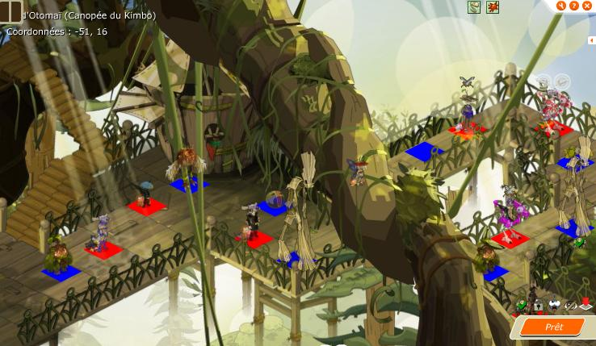

Menu barbok'you

Ce donjon est le dernier de l'ile qui permet de remettre ses stats ou sort à zéro. La clé s'obtient à la fin du donjon du Laboratoire du Tynril Le moyen le plus simple pour y aller sans se soucier de votre alignement est de prendre le scareoplane pour l'arbre hakam (voir dans quetes pour pouvoir le prendre) |
|---|
Un donjon plutôt reservé aux persos plus de level 140 |
|---|
Sinon vous pouvez aussi y accéder plus simplement en prenant le transporteur brigandins pour villages zoth, il faudra alors rentrer dans l'arbre et descendre 4 maps |
|---|
10 minutes plus tard vous voilà devant ! |
|---|
Prévoyez de préference 2 enis, les bestioles derniére salle tapent plutot fort. |
|---|
Prévoyez également une team qui tape soit terre/eau ou alors feu/air |
|---|
Le donjon en lui meme n'est pas trop dur |
|---|
Allez y avec des amis qui ne sont pas trop dans la lune, le kimbo n'est pas specialement dur mais ne pardonne aucune erreur |
|---|
Ah oui, avec un iop, un sacri, un feca ou un xelor c'est plus simple sur des maps comme ca |
|---|
Ca tape presque fort c'est bestiole |
|---|
|  |
|---|
Derniére salle avant le Kimbo ! |
Commencez par tuer tout les monstres sauf le kimbo et son disciple. NE DONNEZ PAS le moindre coup au Kimbo avant d'avoir tué tout le monde sinon vous risquez d'etre decu, tuez en premier les kaskargo c'est les plus chiant. |
|---|
1er tour : Le Kimbo lance un sort qui lui donne de l'agilité, et lui permet de passer dans l'état paire ou impaire quand il reçoit un coup (impaire pour une attaque terre/eau, paire pour une attaque feu/air) Le disciple ne fait rien Vous frappez le Kimbo avec des attaques pour avoir l'état du Kimbo voulu, vous prenez vos positions aussi 2éme tour : Le Kimbo lance un sort sur le disciple Le disciple lance alors la glyphe et bouge d'une case Vous mettez le Kimbo sur la glyphe 3éme tour : Le Kimbo active la glyphe et perd sa résistance pour ce tour Le disciple lui ne fait rien Vous blessez le Kimbo du mieux que vous pouvez Comment se placer : La glyphe est lancée avant le déplacement du disciple, il faut se placer en fonction du disciple - Glyphe impaire : toutes les cases à une distance impaire (1 case, 3 cases, 5 cases, etc...) donneront une glyphe. Pour bien se placer, la case du disciple est sûre, sa diagonale aussi, les diagonales issues des cases en diagonales aussi - Glyphe paire : toutes les cases à une distance paire (0, 2, 4) seront sous glyphe. Pour bien se placer, la case du disciple n'est pas sûre, à côté de lui si Rester à au moins 2 cases du disciple sinon il vous tue (enfin vous pousse sur une case blanche), si vous ne voulez pas vous deplacer d'une case à chaque fois, repoussez le disciple d'une case. Le kimbo saute, et pousse, le plus simple pour ne pas se faire pousser sur une case blanche est de placer 2 personnes que le kimbo tape comme sur le screen, puis un 3éme qui le bourrine, le reste de la team tapent eventuellement dans le bon element et surtout repoussent le disciple d'une case Bon courage, à la moindre erreur, la team est morte ^^ |
|---|
 |
|---|
Parlez à la Madame vous avez maintenant la derniere relique ! |
Dofus est un MMORPG édité par Ankama." Barbok " est un site non-officiel sans aucun lien avec Ankama.
Toutes les illustrations sont la propriété d'Ankama Studio et de Dofus. Le contenu de ce site a été rédigé initialement par Immortal, il ne s'agit que d'une remise en ligne effectuée par Eternal Games.